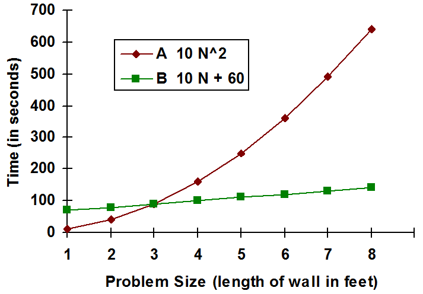

Let’s say you are shown two different algorithms for solving the same problem. One algorithm is short (1/2 page) and easy to understand. The other algorithm is longer (several pages) and more difficult to understand. You are asked to choose the best algorithm for solving the problem. Under these circumstances, it would seem that the choice is obvious – you should use the first algorithm. In reality, however, the decision may not be nearly so clear cut. In fact, depending on other factors such as those discussed below, the longer, more complex looking, algorithm might actually be the best choice.
Why? Well, to begin with, just because an algorithm is easy to understand does not mean that it is a “good” algorithm. Often there is a straightforward way of solving a problem, albeit one that requires a tremendous amount of effort to put into practice. For example, it’s possible to determine the amount of water in a rectangular swimming pool by simply counting the number of trips it takes to empty the pool using a one gallon bucket. Such simple-minded problem solving approaches are known as brute-force methods. Other, more ingenious, solutions may exist that are somewhat harder to understand, but more efficient in terms of the amount of work required to solve the problem. For example, the dimensions of the pool could be measured, its volume computed, and the number of gallons of water in it inferred.
Here is another example. Say you want to determine how many one-foot square tiles would be needed to cover the floor of a perfectly square room. To solve this problem you are given a very large collection of tiles, each one-foot square and assured that the room is a whole number of feet across, so you need not worry about fractions of tiles.
The brute-force solution to this problem would be to actually cover the floor with the tiles you have been given, laying them in neat rows and keeping a careful count of how many tiles you used. This algorithm, which will be referred to as Algorithm A, is presented in . Note that this algorithm is so simple that any child could understand it – once he or she had learned to count.
Algorithm A – the brute force solution to the tile problem
Another algorithm for solving the same problem would involve laying a single row of tiles along one of the walls of the room. Since the problem states that the room is square, all that needs to be done at this point is to multiply the number of tiles in this row by itself. If, for example, the row contained 10 tiles, then that wall would be 10 feet in length, so the entire square room would have to be 10 feet by 10 feet or 100 square feet. Hence 100 tiles would be required to cover the entire floor. This algorithm, referred to as Algorithm B, is presented in .
This algorithm is longer than the first one – it consists of four steps rather than three. The algorithm is also somewhat harder to understand since doing so requires the ability to multiply and some basic knowledge of geometry. Despite these shortcomings, Algorithm B is much more efficient than Algorithm A.
To get a feel for how much better Algorithm B is than Algorithm A, we can look at the time actually required by both algorithms to determine the number of tiles needed to cover a series of different sized rooms. Let’s say it takes 9 seconds to properly place a tile and another second to add one to the number of tiles laid so far. So, “processing” a tile takes a total of 10 seconds. Furthermore, let’s say that we need an entire minute to perform a multiplication operation since we want to take our time and check the result carefully to be sure it is correct.
Algorithm B – a better solution to the tile problem
Given these assumptions, how long will it take to solve the problem for a room that is 12 feet by 12 feet? Algorithm A requires 24 minutes (144 tiles times 10 seconds per tile is 1,440 seconds or 24 minutes). Algorithm B requires only 3 minutes (12 tiles times 10 seconds per tile gives 120 seconds to lay the single row of tiles, plus 60 seconds to perform the multiplication, for a total of 180 seconds or 3 minutes). Here, the “simple” algorithm, A, took eight times as long as the “complex” algorithm, B.
If you play around with different room sizes, you will find that the gap between the “runtime” of the two algorithms increases dramatically with increasing room size. For a 20 by 20 foot room Algorithm A takes 1 hour 7 minutes while Algorithm B takes 4 and 1/2 minutes. Here the second algorithm is over 15 times faster than the first one. As the room size shrinks, the gap closes. For a 5 by 5 foot area Algorithm B is only about twice as fast as Algorithm A. In fact, for very small “room” sizes Algorithm A is actually faster than Algorithm B. For example, if the area was only 2 by 2 feet, under our current assumptions, Algorithm A would require 40 seconds, while Algorithm B would need 1 minute 20 seconds. Remember, we are reserving an entire minute to do the multiplication. Both algorithms take the same amount of time to complete when the room is exactly 3 feet by 3 feet.
contains a graph of the runtimes of these two algorithms. The horizontal dimension represents the length of one wall of the room, in feet. The vertical axis represents the amount of time (in seconds) required to solve the problem. The figure shows that for problem sizes less than 3 by 3, Algorithm A is faster. In the case where the problem size is exactly 3 by 3 both algorithms require the same amount of time. For problem sizes greater than 3 by 3, Algorithm B is faster.
A comparison of the run-times of algorithms A and B
It is natural at this point to express in formal, mathematical notation the runtime of these two algorithms. For our square room, let N be the length (in feet) of any of the walls, the runtime of Algorithm A (in seconds) is 10N2 and the runtime of Algorithm B (also in seconds) is 10N+60. Due to the form of these equations, computer scientists refer to the first algorithm as “quadratic” and the second algorithm as “linear.” Generally, linear algorithms are preferred over quadratic algorithms, since they tend to solve large problems faster.
This section began with a hypothetical question: “If you were given two algorithms for the same problem, one of which appeared more complicated than the other, which algorithm should you use?” As we have seen, the answer to this question is more complex than it first appears. In order to choose the best algorithm we need answers to questions such as: Which algorithm is more efficient? If the “harder” algorithm is more efficient, how long will it take to understand that algorithm? Will you be using the selected algorithm only once, or will you need to solve the problem many different times?
Clearly all of these factors, and many others, are important. If you were only going to solve the problem once, the time taken to understand both algorithms and determine which was faster might not be worth the effort. On the other hand, if it were necessary to solve the problem many different times, then perhaps the time spent studying both algorithms to determine which was faster would be well spent.
It is also important to remember that there is often no “fastest” algorithm for all sizes of a given problem. As with the tile covering problem above, which algorithm is best often depends on the size of the actual problem to be solved. In general, computer scientists concentrate on trying to find the best algorithms for large problem sizes since that is where performance improvements are most important.
A final thought is that in the above discussion, the “best” algorithm was assumed to be the fastest algorithm. While this is usually the case, sometimes it is appropriate to define “best” in other ways, such as the algorithm that uses the least computer memory space or the algorithm that is the easiest to code.
Exercises for